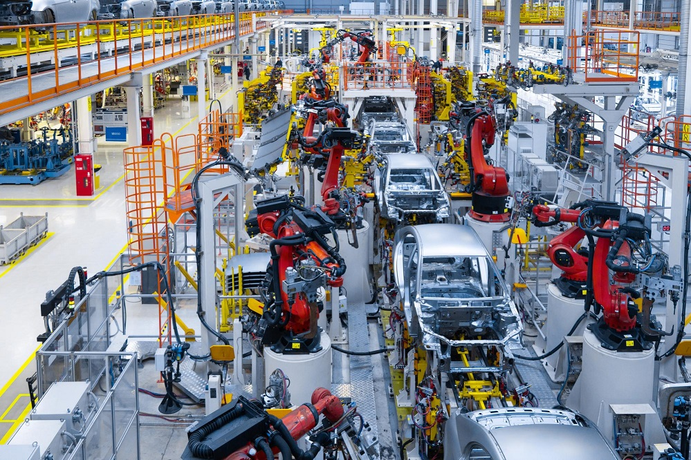

O que é: Automação é o uso de tecnologia para executar tarefas com o mínimo de assistência humana possível. Os mecanismos verificam seu próprio funcionamento, efetuando medições e introduzindo correções, sem a necessidade da interferência do homem.
O uso das técnicas computadorizadas ou mecânicas para diminuir o uso de mão de obra em qualquer processo gerou polêmicas onde a substituição da mão de obra humana pelas máquinas gerou uma crescente onda de desempregos em diversos setores.

Onde pode ser utilizada: A automação pode ser usada por qualquer setor que envolva tarefas repetitivas, mas é mais frequente nos setores de manufatura, robótica, automobilística e também tecnologia, presente em sistemas de TI e software de decisão de negócios.
É muito utilizada na indústria, em linhas de produção. Porém, também pode ser empregada em diversas outras áreas, sempre resultando em diminuição de custos e aumento da produtividade.